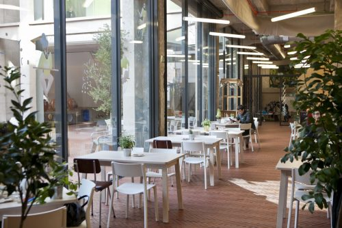

La nave Cenicero era el antiguo secadero de madera de la Serrería Belga, un espacio diáfano que se abría completamente al patio, sin paredes, dejando el armazón interior de vigas y pilares de hormigón a la vista. Para conservar esta idea de continuidad entre interior y exterior, en la rehabilitación se optó por cubrir estos huecos con enormes cristaleras, unas fijas y otras correderas, y por utilizar el mismo pavimento en esta planta que en el patio, de ladrillos rojos colocados en espiga.
El interior de esta planta se divide en dos zonas, la ludoteca y la cantina, con una estructura de madera, en forma de polígono irregular, compartida por ambas. Dicha estructura, ubicada en la parte septentrional de la nave sin llegar a tocar las paredes de hormigón, alberga unas escaleras de emergencia, varios cuartos de almacenaje, y los baños y la cocina de la cantina.
A esta planta solo se puede acceder desde el patio, por una puerta situada bajo La Cosa que da a la ludoteca o por otra más próxima al final de la nave que da paso a la cantina. Más al fondo, entre la cantina y el hotel, hay otras dos puertas, la primera lleva a una sala de mantenimiento y la segunda a un pasillo que da a otros baños y otra escalera de emergencia.
⇧ Volver arriba
A la ludoteca se accede desde el patio, por una puerta de cristal con marco de madera, situada bajo La Cosa, en el extremo norte de la nave. Al entrar, nos encontramos con un espacio rectangular, no muy grande, con mesas de madera rústica y sillas metálicas de colores.
La pared donde está la puerta es toda de cristal y se extiende a nuestra izquierda, formando uno de los lados largos del rectángulo. La siguiente en ángulo recto es de hormigón y tiene en la parte superior un tapiz de lana en tonos verdes y marrones, reproducción del jardín vertical de CaixaForum. De frente está la pared de la estructura de madera, con una estantería de metal con libros y material de dibujo y una puerta que lleva una escalera de emergencia. La pared de nuestra derecha es de vidrio biselado, con una entrada que da paso a la cantina.
⇧ Volver arriba
La entrada de la cantina está en el patio, en el extremo sur de la nave Cenicero. Para acceder tenemos que atravesar dos puertas consecutivas de madera y cristal. Es un local muy amplio, más o menos cuadrado, y como el resto de Medialab no tiene nada de decoración, dejando toda la arquitectura de hormigón y las instalaciones a la vista. Hay cuatro grandes pilares en la zona central, donde se sitúan las mesas y las sillas. El suelo es de ladrillos rojos dispuestos en forma de espiga, al igual que en el patio y la ludoteca.
La pared donde está la puerta, que se extiende hacia nuestra izquierda, está formada por paneles correderos de cristal que en verano permanecen abiertos, uniendo en un único espacio las mesas del interior con las de la terraza del patio. Esta pared de cristal, decorada con vinilos, deja pasar la luz creando un ambiente muy luminoso.
Justo a la derecha de la puerta de entrada, nos encontramos con un muro recubierto de madera de arriba abajo, y junto a él un carrito grande también de madera decorado con plantas y banderitas de colores.
En la esquina del fondo, frente a la puerta, hay un ventanal que da a la calle Cenicero. Es un rincón muy agradable, con un tresillo de escay verde y una mesita baja de café, sobre la que cuelga una curiosa lámpara: una bola de mimbre de la que sobresalen palos de colores con bombillas en los extremos.
Al final de la barra está la cocina, escondida ya dentro de la estructura de madera. Esta estructura, que cierra el espacio de la cantina por la izquierda, no es una pared recta, sino que va haciendo ángulos y está llena de cuadros de colores vivos. Si la bordeamos, girando a la derecha, llegamos a un ancho pasillo, paralelo al patio, donde encontramos otra zona de mesas y sillas, la entrada a los baños y al fondo la puerta que comunica con la ludoteca.
⇧ Volver arriba
⇦ Anterior: Nave Alameda - Planta 2
⇨ Siguiente: Nave Cenicero - Planta 1